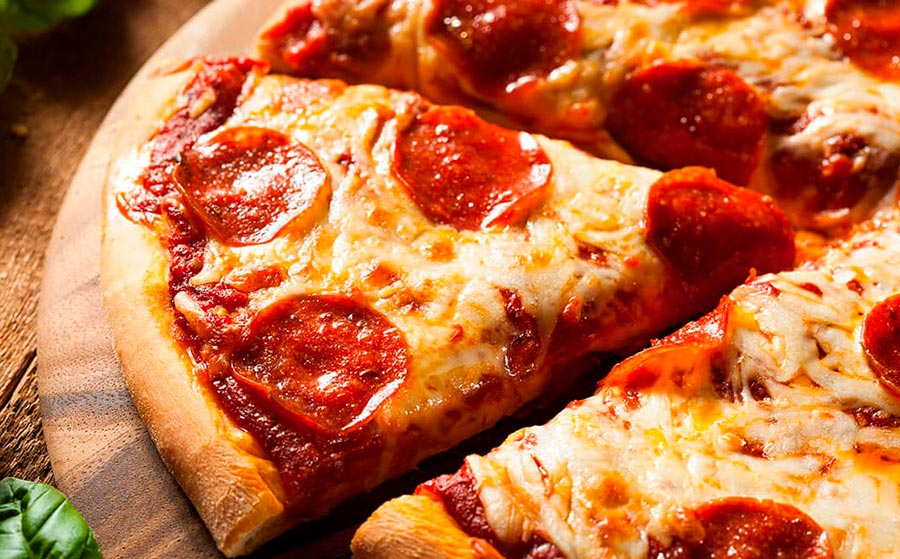
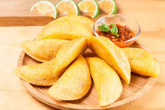
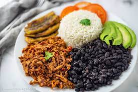
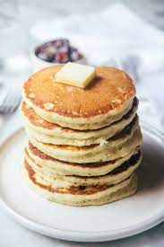

<!DOCTYPE html>
<html></html>
<head>
    <title>Practica numero 1</title>
    <meta charset="ufc-8"> 
    <link rel="stylesheet" href="style.css">
    <link rel="preconnect" href="https://fonts.googleapis.com">
    <link rel="preconnect" href="https://fonts.gstatic.com" crossorigin>
    <link href="https://fonts.googleapis.com/css2?family=Kanit:ital@1&family=Outfit:wght@300&display=swap" rel="stylesheet">
    
</head>
<body>
    <header id="titulo">
        <h1 id="title">Mis comidas favoritas</h1>
    </header>
   <section class="container">
    <p id="subtitulo"> <b>En este pequeño blog resumire brevemente mis cinco platos favoritos.</p</b> 

    <h2 id="post1">Pizza de jamon y queso.</h2>
    
 
    <p>La pizza es mi favorita porque de pequeño mi madre la hacia deliciosa y desde siempre me fascina su olor y sabor</p>
 
    <h2 id="post2">Pasta con carne molida </h2>
     
 
     <p>La Pasta con carne molida es de mis favoritas porque es de los platillos que mas suelo comer, especialmente cuando le coloco queso y mayonesa.</p>
 
     <h2 id="post3">Empanadas</h2>
     
     <p>Esta claramente me fascina por el simple hecho de que las puedes hacer de todo, ya sea carne, pollo, queso, jamon, etc.</p>
 
     <h2 id="post4">Pabellon</h2>
     
     
     <p>El pabellon es un platillo comun de mi pais por ende aparte de encantarme su mezcla de sabores entre salados, dulces y demas simplemente es perfecto.</p>
     
     <h2 id="post5"> Panqueca </h2>
     
     <p>Decidi dejarla de ultima pero no menos importante, es mi favorita y cada que estoy con algo de prisa es mi primera decision a la hora de comer algo.</p>
    </section> 
    <footer>
        Freddy Oswaldo Torres
        <br>
        04/06/2023
    </footer>
   
</body>
</html>